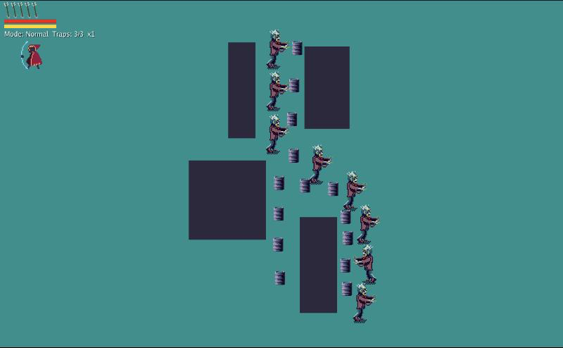
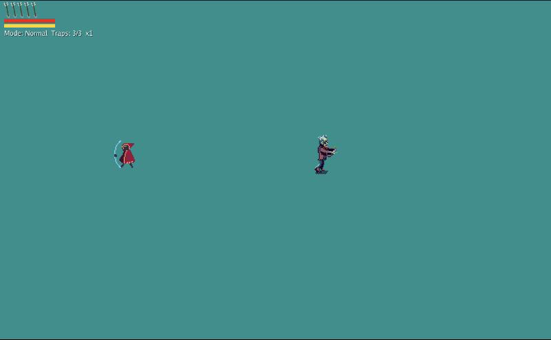

ChainTrapper
ChainTrapper is a small top-down physics game about setting things up and watching them fall over. You play a little red-hooded archer on a map full of zombies, explosive barrels and booster pads, and the fun part is rarely the single shot. It's the chain reaction afterwards, when one barrel takes out the next and the whole row goes up.
I started it in early 2022 as a C# experiment with sticky arrows, wolves chasing sheep and a little map editor. In 2026 I ported the whole thing to Go with Ebitengine and Box2D and finally made it into a game. Arrows stick in enemies and walls, and they get faster and hit harder the longer you draw the bow. You can catch arrows that are still flying by sliding into them at the right moment. You also have a grappling hook, a tether and a few fire traps to place.
The maps are built in the in-game editor (it's on the title menu if you want to poke at it, though saving does nothing in the browser). Each map keeps its own highscore table. In the browser version the highscores only last until you reload the page.
Screenshots



Latest updates
- 2026-10-01 Arrows stick in enemies, drop when the corpse is removed
- 2026-10-01 Arrows persist after hits; sliding catches live arrows head-on
- 2026-10-01 Fix explosion stutter: no hit-stop per barrel, cap screen shake
- 2026-10-01 Arrow speed and knockback scale with bow draw-out
- 2026-10-01 Restore original slingshot shooting; radial stick deadzone
- 2026-09-30 Arrows: never hit shooter on release, hurt the player later, catch with timed slide